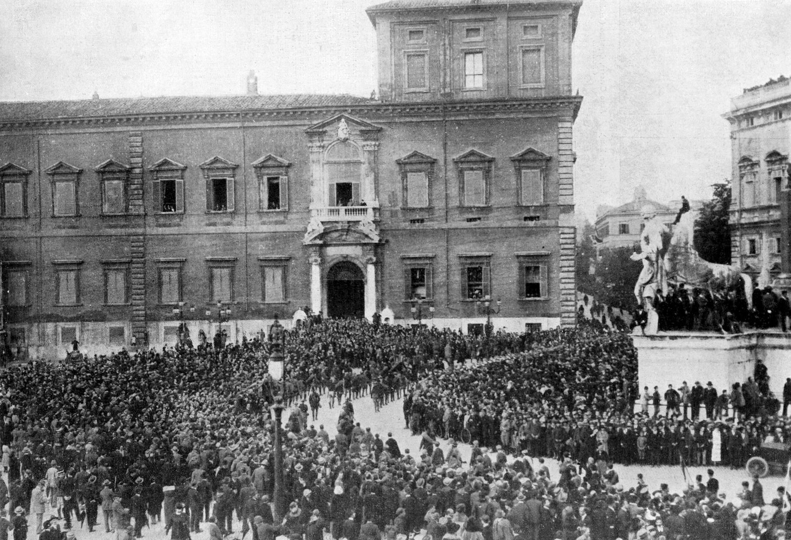

Ieri e oggi · Storia
28 ottobre 1922: la Marcia su Roma
Pochi deputati, migliaia di camicie nere male armate, un esercito molto più forte. E un re che non firma. Come il fascismo arrivò al governo in quattro giorni.

Il contesto
Dal 1920 le squadre fasciste usano la violenza contro sindacati, socialisti e amministrazioni locali. Nell'agosto 1922 occupano Palazzo Marino a Milano e cacciano con la forza l'amministrazione socialista. Eppure in Parlamento i fascisti sono pochi: alle elezioni del 1921 eleggono 35 deputati, nelle liste dei Blocchi nazionali di Giolitti, in una Camera di 535 seggi.
Nell'autunno 1922 Mussolini gioca su due tavoli: tratta con gli ex presidenti del Consiglio Nitti, Salandra e Giolitti, e intanto prepara la mobilitazione. Il 24 ottobre, all'adunata fascista di Napoli, la decisione è presa.
27 e 28 ottobre: le occupazioni e lo stato d'assedio
Tra il 27 e il 28 ottobre le squadre occupano prefetture, stazioni e uffici postali in molte città del Centro-Nord. Verso Roma si muovono tra 16mila e 20mila camicie nere, male armate, che si radunano a nord della capitale. Mussolini resta a Milano. A difendere Roma ci sono circa 28mila soldati.
La mattina del 28 il governo di Luigi Facta proclama lo stato d'assedio. Ma il re Vittorio Emanuele III si rifiuta di firmare il decreto, che viene revocato. Facta si dimette.
29-31 ottobre: l'incarico
Il 29 il re chiama Mussolini. La sera stessa lui prende il treno da Milano e il 30 arriva a Roma, dove riceve l'incarico di formare il governo. Il 31 il nuovo governo giura. Nei giorni successivi gli squadristi attaccano i quartieri antifascisti della capitale: gli scontri causano 22 morti.
Cosa venne dopo
Il primo governo Mussolini è una coalizione e lo Statuto resta in vigore: non è ancora una dittatura. Ma in pochi anni le cose cambiano. Nel 1923 la legge Acerbo assegna un largo premio di maggioranza a chi ottiene più voti. Nel 1924, dopo le elezioni, il deputato socialista Giacomo Matteotti, che aveva denunciato in aula violenze e brogli, viene rapito e ucciso. Tra il 1925 e il 1926 le cosiddette leggi fascistissime sciolgono i partiti di opposizione e mettono fine alla libertà di stampa.
Perché se ne parla ancora
Per molto tempo la Marcia su Roma è stata raccontata come una messinscena: pochi uomini male armati, sotto la pioggia, davanti a un esercito molto più forte. Lo storico Emilio Gentile, più che di una marcia su Roma, parla di una "marcia sul potere": il passaggio decisivo non avvenne in strada, ma nelle scelte di chi poteva fermarla e non lo fece.
In sintesi: il fascismo arrivò al governo per via legale, con l'incarico del re, ma sotto la pressione della violenza delle squadre. Le istituzioni che avrebbero potuto fermarlo scelsero di non farlo.
Fonti
- Il Post, 28 ottobre 2022: Cosa rese possibile la marcia su Roma
- Focus: 28 ottobre 1922, che cosa è successo
- Avvenire: Emilio Gentile, la Marcia su Roma, una tragedia creduta una farsa
- Wikipedia (en): Acerbo Law
Questo articolo è stato scritto con l'intelligenza artificiale e verificato sulle fonti indicate. Hai trovato un errore? Segnalalo sui nostri social: le correzioni vengono pubblicate qui con la data della modifica.